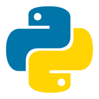

Python Plus Edition Doc Page
Welcome to the python plus documentation center, where you can include how to start Python plus and many other contents, learn how to use Python plus to make programs, and get some basic program cases, Now, read it.
How to download and install Python plus
As long as you download the installation program of Python plus, you need to run the installation program of Python plus with the permission of administrator, wait for the progress bar to read, and python plus has been installed. The version downloaded from the home page of Python plus is not a complete version, but supports the running of Python plus program. If you want to develop Python plus program, you need to download Python plus developer kit
How to install Python Plus Developer Kit
It's almost the same as ordinary Python plus, but it takes up more storage and has a built-in Python plus debugger